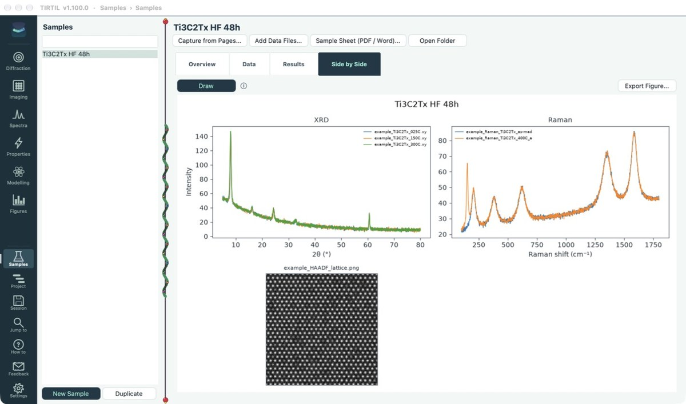
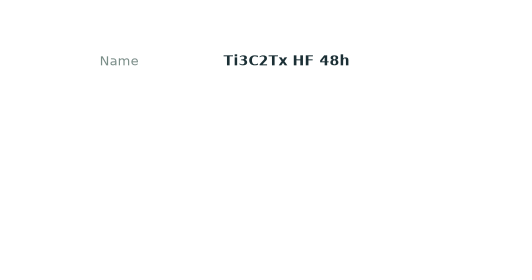

Samples and project
Samples
Everything about one sample in one place.

Steps
New SampleMake a page for each sample: material, formula, synthesis, tags, a description and the Project task it belongs to.Add Data Files...Add its data files of every kind. The type is guessed (change it if needed); a double-click opens the file on its page.Capture from Pages...Save figures and results from any page into the sample with your notes; Side by Side shows its XRD, Raman, XAFS and an image together; Sample Sheet makes a PDF or Word file.
How it works

Worked example
Ti3C2Tx HF 48h: add the heating XRD series, the 785 nm Raman map and the Ti K-edge scan; capture the c against T plot and the LCF result; the sample sheet then holds the description, the files, the side by side figure and both results.